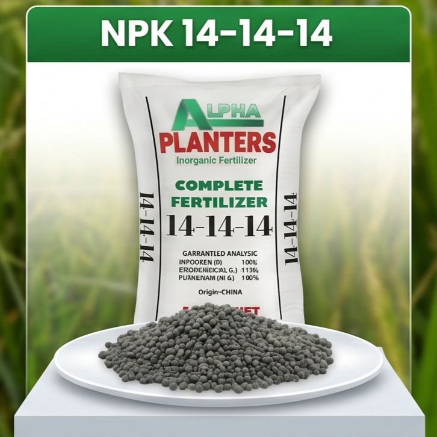
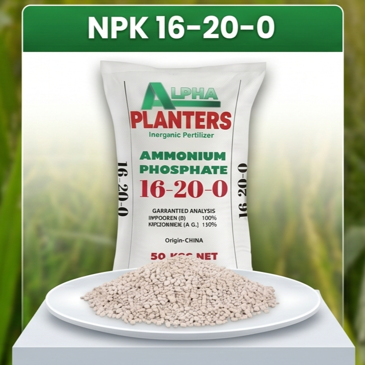
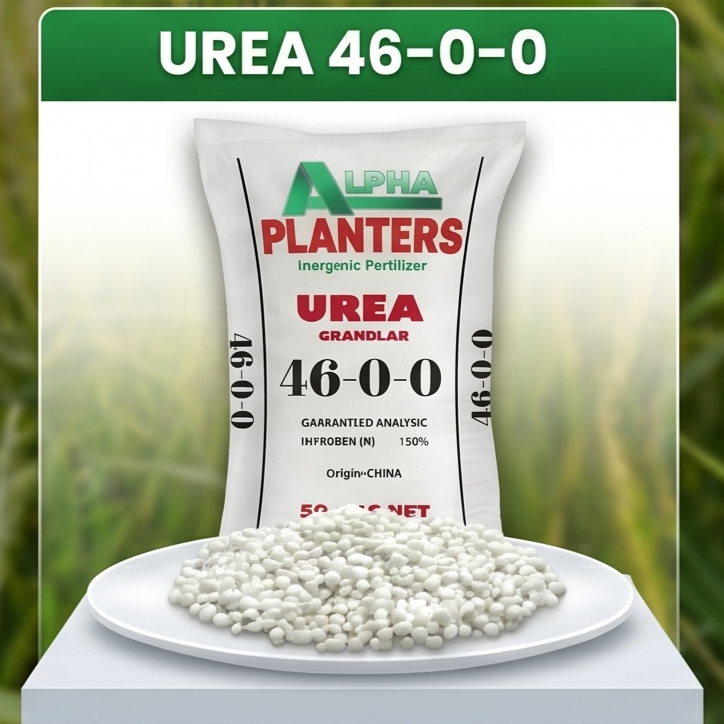
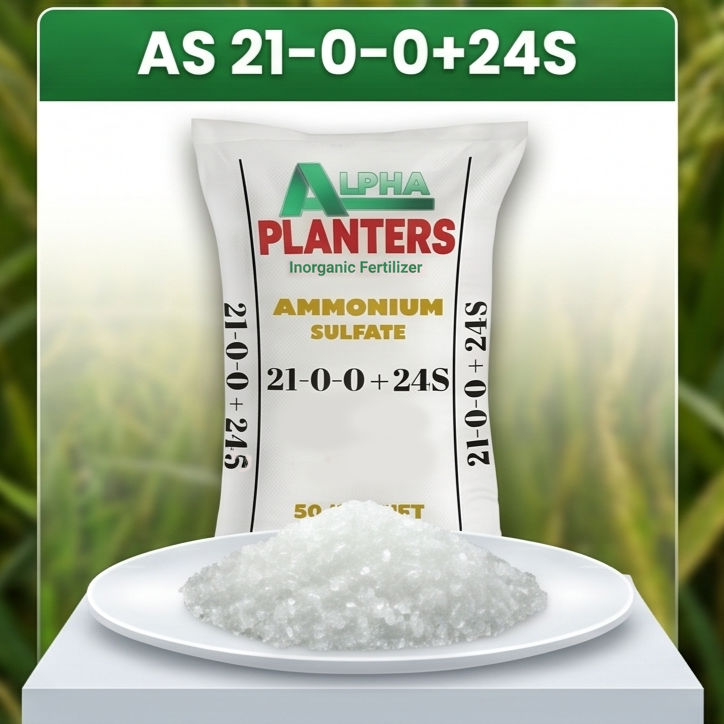
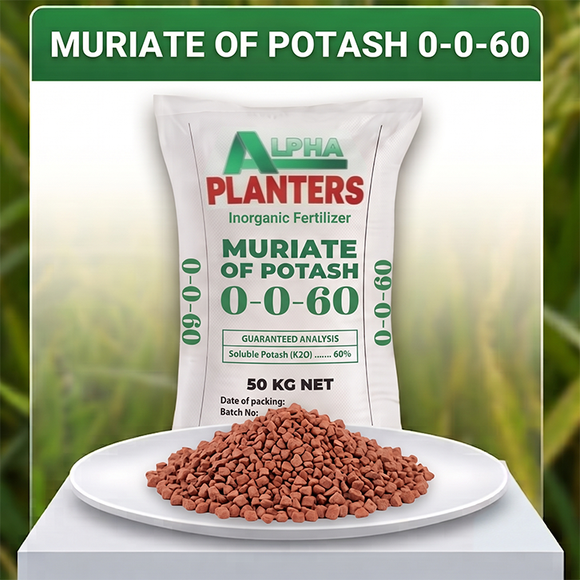

Aming Premium Fertilizer Products
Our Premium Fertilizer Products
De-kalidad na pataba na engineered para sa maximum crop yield at soil health. Bawat produkto ay formulated na may tamang balance ng essential nutrients para sa iyong agricultural needs.
Quality fertilizers engineered for maximum crop yield and soil health. Each product is formulated with the right balance of essential nutrients for your agricultural needs.

NPK 14-14-14
Complete Fertilizer
Complete Balanced Fertilizer
A balanced, multi-nutrient fertilizer meeting nutritional needs of a wide range of crops. Apply at the correct stage and dosage to maximize plant growth and harvest potential.
• 14% Nitrogen (N)
• 14% Phosphorus (P)
• 14% Potassium (K)

NPK 16-20-0
Ammonium Phosphate
Ammonium Phosphate Formula
Specialized fertilizer with high nitrogen and phosphorus content. Promotes deeper root development and excellent flowering and fruiting for key crops.
• 16% Nitrogen (N)
• 20% Phosphorus (P)
• 0% Potassium (K)

UREA 46-0-0
High Nitrogen Fertilizer
Urea Fertilizer - Pure Nitrogen
Ultra-pure fertilizer with exceptional nitrogen composition (~46%). A universal fertilizer suitable for all plant types. White granular pearls, fully water-soluble, and odorless.
• 46% Nitrogen (N)
• 0% Phosphorus (P)
• 0% Potassium (K)

AS 21-0-0+24S
Ammonium Sulfate
Ammonium Sulfate with Sulfur
Chemical compound combining ammonium and sulfate ions. White crystalline salt, water-soluble inorganic compound. Provides essential nitrogen and sulfur for optimal plant growth and health.
• 21% Nitrogen (N)
• 24% Sulfur (S)
• 0% Potassium (K)

MOP 0-0-60
Muriate of Potash
Muriate of Potash
Highly concentrated potassium fertilizer (0% Nitrogen, 0% Phosphorus, 60% Potassium). It is the most common and cost-effective way to supply potassium to crops, promoting disease resistance, drought tolerance, and healthy fruit and root development.
• 0% Nitrogen (N)
• 0% Phosphorus (P)
• 60% Potassium (K)
Garantiya sa Kalidad ng Produkto
Product Quality Guarantee
Lahat ng aming fertilizer products ay sumasailalim sa rigorous quality control at testing upang masiguro ang highest standards. Bawat batch ay tested para sa nutrient composition, purity, at effectiveness bago i-distribute.
All our fertilizer products undergo rigorous quality control and testing to ensure the highest standards. Each batch is tested for nutrient composition, purity, and effectiveness before distribution.
Committed kami sa pagbibigay sa farmers at agricultural professionals ng premium-quality fertilizers na maximize ang crop yield habang nananatiling healthy ang lupa at sustainable.
We are committed to providing farmers and agricultural professionals with premium-quality fertilizers that maximize crop yield while maintaining soil health and sustainability.